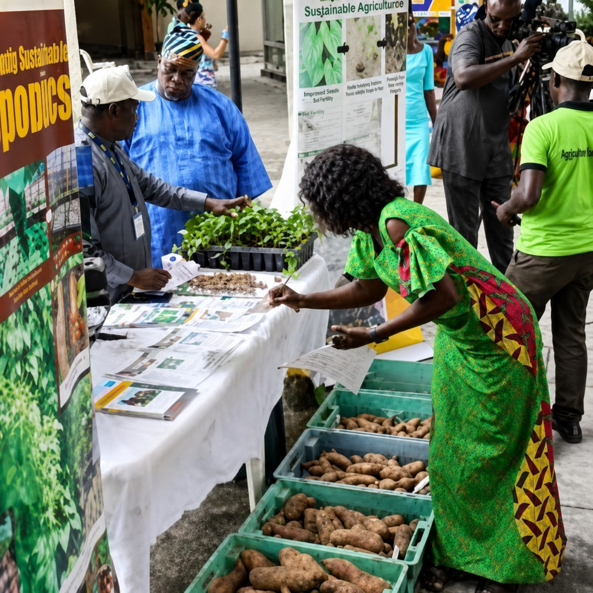

Research
Evidence, findings, technologies and discoveries from agricultural research.
ICERIA provides a platform for communicating research outcomes, showcasing innovation and connecting evidence with pathways to use.
Evidence, findings, technologies and discoveries from agricultural research.
Solutions and ideas that translate knowledge into practical possibilities.
Testing, refinement and evidence of practical performance.
Connecting validated solutions with enterprise and investment.
Supporting uptake and practical use of validated agricultural solutions.
Contributing to resilient, productive and sustainable food systems.
Turning research and innovation impact into broader economic opportunity.

ICERIA supports clear communication of research outcomes through conference presentations, exhibition, news, resources, infographics and stakeholder dialogue.
The platform is also intended to create connections between researchers, innovators, policymakers, investors, agribusinesses, media and users of agricultural technologies.